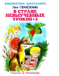

"В стране невыученных уроков" вот уже сорок лет - самая читаемая в школе книга-сказка о лентяе и двоечнике Вите Перестукине. Ее автор, Лия Гераскина, написала продолжение сказки "В стране невыученных уроков-2", в котором уже Витя помогает своим друзьям. Книга имела успех, поэтому автор решила написать "Третье путешествие в страну невыученных уроков". Полюбившиеся герои - кот Кузя, пес Рекс и попугай Жако, а также известные исторические и литературные личности помогают друзьям Вити понять необходимость хорошо учиться. Для среднего школьного возраста.